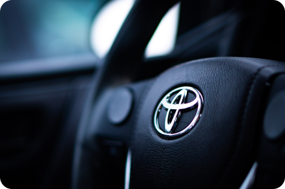
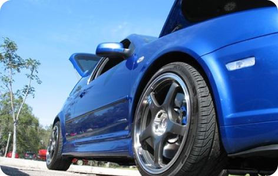
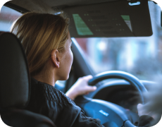
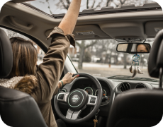
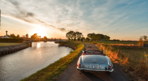
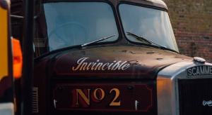

O mnie
JERZY JABŁOŃSKI
Cześć, jestem Jerzy Jabłoński. Od ponad 25 lat szkolę przyszłych kierowców w Proszowicach i Krakowie. Podczas jazd skupiam się na tym, żeby wiedza o przepisach szybko przełożyła się na bezpieczne i pewne zachowanie na drodze. Każdego kursanta uczę indywidualnie — ćwiczymy zarówno codzienne sytuacje w ruchu miejskim, jak i te mniej przewidywalne. Stawiam na spokój, precyzję i zrozumienie tego, co dzieje się wokół samochodu. Moim celem jest nie tylko przygotowanie Cię do egzaminu, ale przede wszystkim nauczenie samodzielnej i świadomej jazdy.
Podczas nauki ze mną:
zbudujesz pewność siebie za kierownicą
nauczysz się podejmować bezpieczne decyzje w realnym ruchu drogowym
opanujesz manewry potrzebne na egzaminie i w codziennej jeździe
nauczysz się obserwować drogę i przewidywać zachowania innych uczestników ruchu
otrzymasz praktyczne wskazówki przydatne także po zakończeniu kursu


Teoria zamieniona w praktykę
— czego nauczysz się podczas jazd:
poznajemy samochód: prawidłowa pozycja za kierownicą, ustawienie fotela i lusterek, obsługa podstawowych elementów oraz bezpieczne rozpoczęcie jazdy
uczymy się płynnej kontroli prędkości, pracy sprzęgłem w samochodzie z manualną skrzynią biegów, hamowania i właściwego toru jazdy
ćwiczymy ruszanie na wzniesieniu i bezpieczne zatrzymywanie pojazdu
doskonalimy cofanie z wykorzystaniem lusterek oraz precyzyjne manewrowanie w różnych kierunkach
ćwiczymy różne sposoby parkowania, ruszanie z miejsca oraz prawidłowe włączanie się do ruchu i wyjazd z dróg podporządkowanych
uczymy się bezpiecznego manewrowania na parkingach, stacjach paliw i w ograniczonej przestrzeni
ćwiczymy zmianę pasów ruchu, przejazd przez skrzyżowania oraz prawidłowe zachowanie przy przejściach dla pieszych
uczymy się jazdy w korkach i utrudnionym ruchu, bezpiecznego wyprzedzania, omijania oraz reagowania na przeszkody
ćwiczymy jazdę drogami szybkiego ruchu i autostradą
przygotowujemy się do zadań i tras egzaminacyjnych w warunkach zbliżonych do egzaminu
poznajemy kulturę jazdy, zasady komunikacji między kierowcami oraz dobre praktyki zwiększające bezpieczeństwo na drodze
Chcesz zdobyć prawo jazdy?
Wybierz zakres szkolenia i zarezerwuj termin

„Kierowca Doskonały”
pakiet standard
30 godzin jazdy
nauka od podstaw
kurs trwa około 2 miesięcy
możliwość czasowego zawieszenia kursu

„Jedziemy z tym koksem”
pakiet intensywny
45 godzin jazdy
kurs trwa około 6 tygodni
(intensywny harmonogram szkolenia)dodatkowe ćwiczenia w trudniejszych warunkach drogowych
pomoc w organizacji terminu
egzaminu
„Nie jestem nowicjuszem”
jazdy doszkalające
20 godzin jazdy
program trwa około 4 tygodni
indywidualny plan doszkolenia
automatyczna lub manualna skrzynia biegów